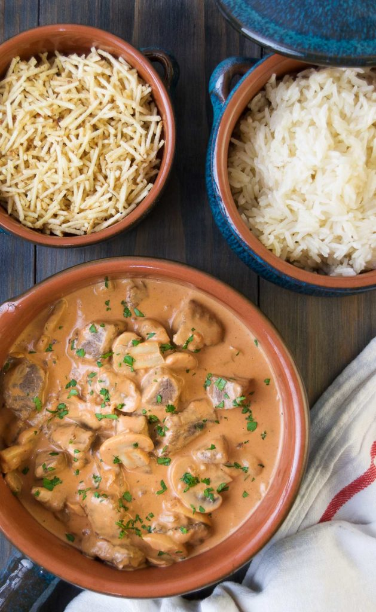

Beef Stroganoff

Description
Beef Stroganoff, or Estrogonofe de Carne, as we call it in Portuguese, is a very popular dish in Brazil. Despite the fact that estrogonofe de carne is part of the everyday Brazilian life, this dish is actually Russian!
The biggest difference between the classic Russian and the Brazilian stroganoff is that the classic version uses mustard, vegetable or beef stock (occasionally uses tomato sauce, too) and is finished with sour cream. The Brazilian version uses tomato sauce (or paste) mixed with heavy cream and is almost always served with white rice or potato sticks (batata palha).
Ingredients
- Filet Mignon
- Olive oil
- High-quality beef cut into cubes or sliced into strips
- Diced onion
- Brazilian sofrito or Cloves of minced garlic
- Sliced white mushrooms
- Tomato paste
- Ketchup
- Worcestershire sauce
- Heavy cream
- Salt and pepper to taste
Directions
The Sear
- Season your beef and let it sit on the counter for about 20 minutes. We’re doing this to make sure the beef isn’t straight-out-of-the-fridge cold when we add it to the pan. If the beef is cold, it reduces the heat in the pan, and it slow cooks the meat, causing it to become chewy. No thanks!! Then, place the beef in a hot oiled pan and give them a quick sear (30 seconds to a minute). The quick sear is important for the same reason as the temperature of the meat going into the pan. If you saute it for too long, it starts to get tough.